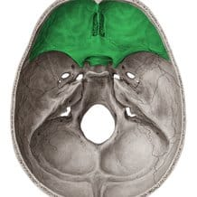
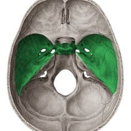
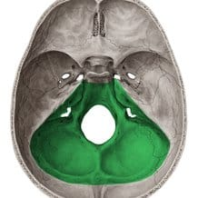
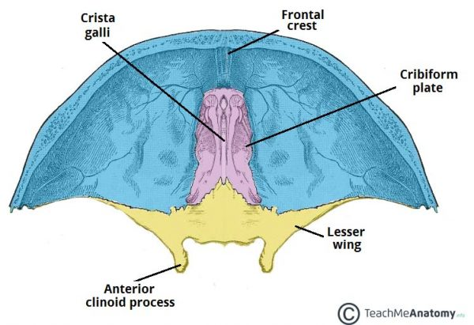
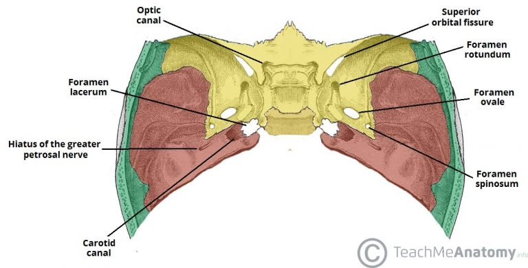
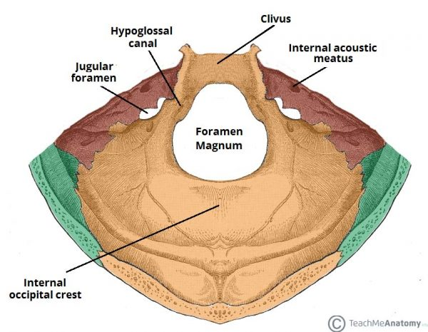
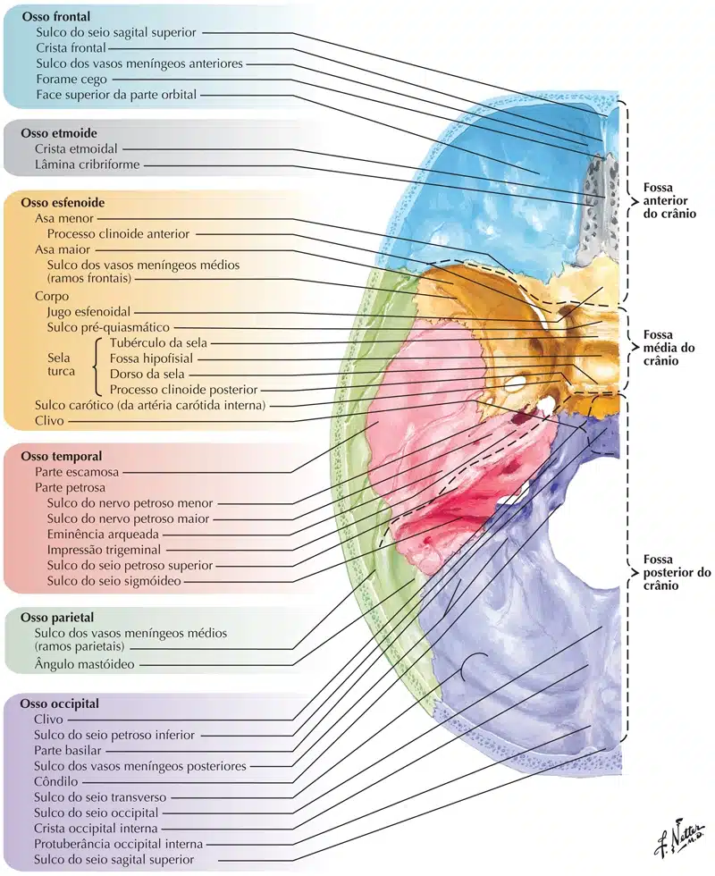
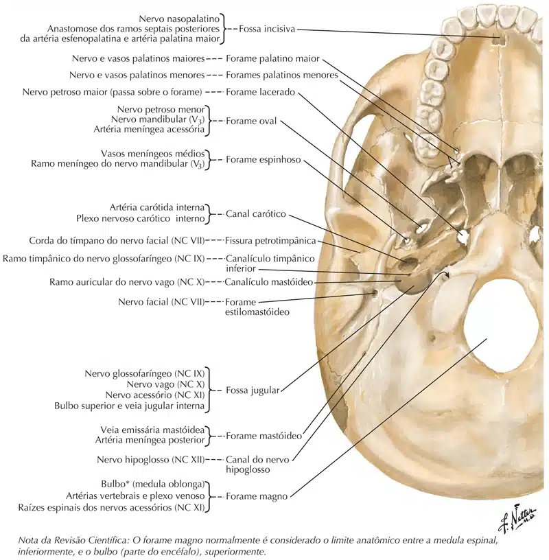

A base do crânio forma o assoalho da cavidade craniana e pode ser dividida em três fossas ou andares:
Anterior

https://www.kenhub.com/
Média

https://www.kenhub.com/
Posterior

https://www.kenhub.com/
Fossa anterior
Também chamada de andar superior da base do crânio, é formada pelas lâminas orbitais do frontal, pela lâmina crivosa do etmóide e pelas asas menores e parte anterior do esfenóide.

https://teachmeanatomy.info/
Fossa média
Também chamada de andar médio da base do crânio, é formada anteriormente pelas asas menores do esfenóide, posteriormente pela porção petrosa do osso temporal e lateralmente pelas escamas do temporal, osso parietal e asa maior do esfenóide.

https://teachmeanatomy.info/
Fossa posterior
Também chamada de andar inferior, é formada pelo dorso da sela e clivo do esfenóide, pelo occipital e parte petrosa e mastóidea do temporal.
Essa é a maior fossa do crânio e também abriga o maior forame do crânio, o forame magno.

https://teachmeanatomy.info/

NETTER: Frank H. Netter Atlas De Anatomia Humana. 5 ed. Rio de Janeiro, Elsevier, 2018.
NETTER: Frank H. Netter Atlas De Anatomia Humana. 5 ed. Rio de Janeiro, Elsevier, 2018.
NETTER: Frank H. Netter Atlas De Anatomia Humana. 5 ed. Rio de Janeiro, Elsevier, 2018.

NETTER: Frank H. Netter Atlas De Anatomia Humana. 5 ed. Rio de Janeiro, Elsevier, 2018.